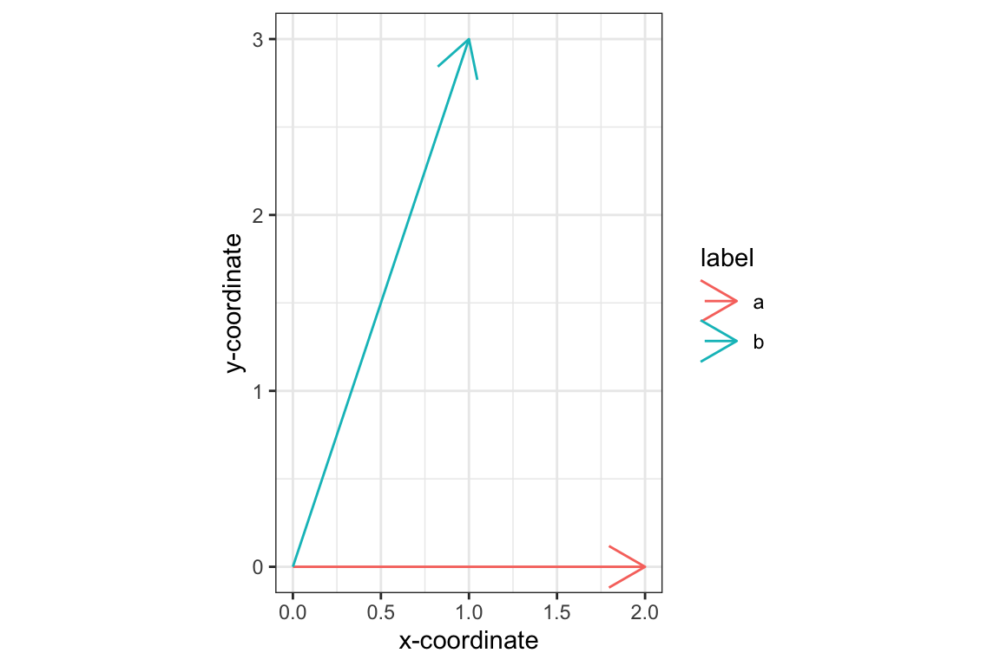

Chapter 9 Vector algebra
9.2 Vector Mathematics in R
R vectors support basic arithmetic operations that correspond to the same operations on geometric vectors. For example:
> x <- 1:15
> y <- 10:24
> x
## [1] 1 2 3 4 5 6 7 8 9 10 11 12 13 14 15
> y
## [1] 10 11 12 13 14 15 16 17 18 19 20 21 22 23 24
> x + y # vector addition
## [1] 11 13 15 17 19 21 23 25 27 29 31 33 35 37 39
> x - y # vector subtraction
## [1] -9 -9 -9 -9 -9 -9 -9 -9 -9 -9 -9 -9 -9 -9 -9
> x * 3 # multiplication by a scalar
## [1] 3 6 9 12 15 18 21 24 27 30 33 36 39 42 45R also has an operator for the dot product, denoted %*%.
This operator also designates matrix multiplication, which we will
discuss in the next chapter. By default this operator returns an object of the R
matrix class. If you want a scalar (or the R equivalent of a scalar,
i.e. a vector of length 1) you need to use the drop() function.
> z <- x %*% x
> class(z) # note use of class() function
## [1] "matrix" "array"
> z
## [,1]
## [1,] 1240
> drop(z)
## [1] 1240In lecture we saw that many useful geometric properties of vectors could be expressed in the form of dot products. Let’s start with some two-dimensional vectors where the geometry is easy to visualize:
> a <- c(2, 0) # the point (2,0)
> b <- c(1, 3) # the point (1,3)To draw our vectors using ggplot, we’ll need to create a data frame with columns representing the x,y coordinates of the end-points of our vectors:
df <- data.frame(x.end = c(a[1], b[1]),
y.end = c(a[2], b[2]),
label = c('a', 'b'))
ggplot(df) +
geom_segment(aes(x=0, y = 0, xend = x.end, yend = y.end, color=label),
arrow = arrow()) +
labs(x = "x-coordinate", y = "y-coordinate") +
coord_fixed(ratio = 1) + # insures x and y axis scale are same
theme_bw()
Let’s see what the dot product can tell us about these vectors. First recall that we can calculate the length of a vector as the square-root of the dot product of the vector with itself (\(\vert\vec{a}\vert^2 = \vec{a} \cdot \vec{a}\))
> len.a <- drop(sqrt(a %*% a))
> len.a
## [1] 2
> len.b <- drop(sqrt(b %*% b))
> len.b
## [1] 3.162278How about the angle between \(a\) and \(b\)? First we can use the dot product and the previously calculated lengths to calculate the cosine of the angle between the vectors:
> cos.ab <- (a %*% b)/(len.a * len.b)
> cos.ab
## [,1]
## [1,] 0.3162278To go from the cosine of the angle to the angle (in radians) we need the arc-cosine function, acos():
> acos(cos.ab) # given angle in radians
## [,1]
## [1,] 1.2490469.3 Simple statistics in vector form
Now let’s turn our attention to seeing how to calculate a variety of simple statistics such as the mean, variance, etc. in terms of vector operations.
To illustrate these oeprations we’ll use the I. setosa data from the iris examplar data set.
setosa <- filter(iris, Species == "setosa")9.3.1 Mean
First let’s calculate the mean for the Sepal.Length variable. Referring back to the slides for today’s lecture, we see we can calculate the mean as: \[ \bar{x} = \frac{\vec{1} \cdot \vec{x}}{\vec{1} \cdot \vec{1}} \]
Applying this formula in R:
> sepal.length <- setosa$Sepal.Length
> ones <- rep(1, length(sepal.length)) # 1-vector of length n
> mean.sepal.length <- (ones %*% sepal.length)/(ones %*% ones)
> mean.sepal.length %<>% drop # use drop to convert back to scalar
> mean.sepal.length
## [1] 5.006Let’s compare our calculation against the built-in mean function:
> mean(sepal.length)
## [1] 5.0069.3.2 Mean centering
Mean centering a vector, means subtracting the mean from each element of that vector:
\[ \vec{x}_c = \vec{x} - \bar{x}\vec{1} \]
Now let’s create a mean centered vector from sepal.length, which we’ll refer to as the vector of deviates about the mean:
> sepal.length.deviates <- sepal.length - mean.sepal.length Note that we didn’t have to explicitly multiply the a one vector by the mean, as R will automatically make the lengths of the sepal.length (a vector of length 150) and mean.sepal.length (a vector of length 1) match by vector recycling.
9.3.3 Variance and standard deviation
Using the vector of deviates we can easily calculate the variance and standard deviation of a variable.
The variance of a variable, in vector algebraic terms, is:
\[ S_x^2 = \frac{\vec{x}_c \cdot \vec{x}_c}{n-1} \]
The standard deviation is simply the square root of the variance
\[ S_x = \sqrt{S_x^2} \]
These calculations for the Sepal.Length variable:
> n <- length(sepal.length.deviates)
> var.sepal.length <- (sepal.length.deviates %*% sepal.length.deviates)/(n-1)
> var.sepal.length
## [,1]
## [1,] 0.124249
> sd.sepal.length <- sqrt(var.sepal.length)
> sd.sepal.length
## [,1]
## [1,] 0.3524897Again, we can compare our calculations to the built-in var() and sd() functions:
> var(sepal.length)
## [1] 0.124249
> sd(sepal.length)
## [1] 0.35248979.3.4 Covariance and correlation
Now let’s consider the common measures of bivariate association, covariance and correlation.
Covariance is:
\[ S_{XY} = \frac{\vec{x} \cdot \vec{y}}{n-1} \]
Correlation is:
\[ r_{XY} = \frac{\vec{x} \cdot \vec{y}}{|\vec{x}||\vec{y}|} = \frac{S_{XY}}{S_x S_Y} \]
We’ll examine the relationship between sepal length and width:
sepal.width <- setosa$Sepal.Width
mean.sepal.width <- (ones %*% sepal.width)/(ones %*% ones)
sepal.width.deviates <- sepal.width - mean.sepal.width
var.sepal.width <- drop((sepal.width.deviates %*% sepal.width.deviates)/(n-1))
sd.sepal.width <- sqrt(var.sepal.width)With the vector of sepal width deviates in hand we can now calculate covariances:
> cov.swidth.slength <- (sepal.length.deviates %*% sepal.width.deviates)/(n-1)
> cov.swidth.slength
## [,1]
## [1,] 0.09921633
> cov(sepal.length, sepal.width) # and compare to built-in covariance
## [1] 0.09921633And correlations:
> len.sepal.length <- sqrt(sepal.length.deviates %*% sepal.length.deviates)
> len.sepal.width <- sqrt(sepal.width.deviates %*% sepal.width.deviates)
>
> corr.swidth.slength <-
+ (sepal.length.deviates %*% sepal.width.deviates) / (len.sepal.length * len.sepal.width)
> corr.swidth.slength
## [,1]
## [1,] 0.7425467
> cor(sepal.length, sepal.width) # and compare to built-in correlation
## [1] 0.7425467Alternately, we could have calculated the correlation more simply as follows:
> cov.swidth.slength/(sd.sepal.length * sd.sepal.width)
## [,1]
## [1,] 0.7425467